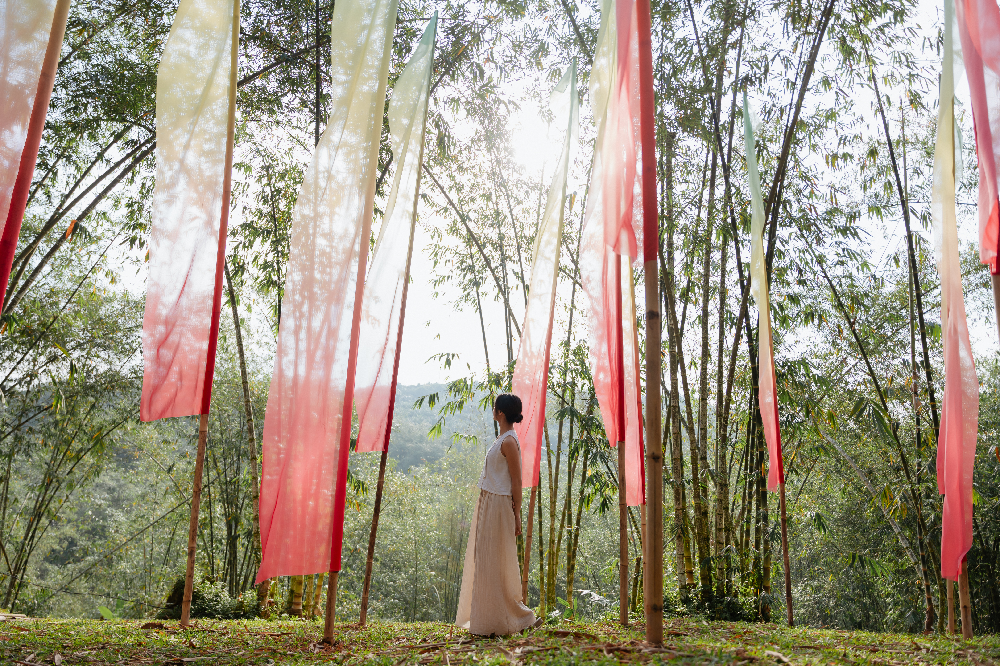

.jpg)
01
Cultural Heritage
Putuo Village is unique, irreplaceable and beautiful, preserving and conserving the heritage for future generations to cherish.
TM‑03 · Tourism
Ashoka Group partners with Putuo Village, a cultural heritage site and nature retreat blending temple architecture, bamboo forest and local folklore into a single itinerary.
Putuo Village is built around three things worth travelling for.
Putuo Village is unique, irreplaceable and beautiful, preserving and conserving the heritage for future generations to cherish.

A natural bamboo trek where conservation meets recreation, rewarding visitors with unforgettable impressions and a profound sense of relaxation.
.jpg)
Seasonal lanterns, legends and ceremony bring the village's mythology to life, a living backdrop rather than a museum piece.
.jpg)
The Village
Temple halls, courtyards and gardens are arranged around the existing forest rather than cleared for it, so the result is a site that reads as old and settled, even where it's been carefully maintained.
Start a conversation →Putuo Village
Putuo Village is the cultural heritage site and nature retreat that Ashoka Group's tourism business is built around: heritage architecture, bamboo forest trails and eco cuisine kept to a single standard of upkeep.
Visit Putuo Village